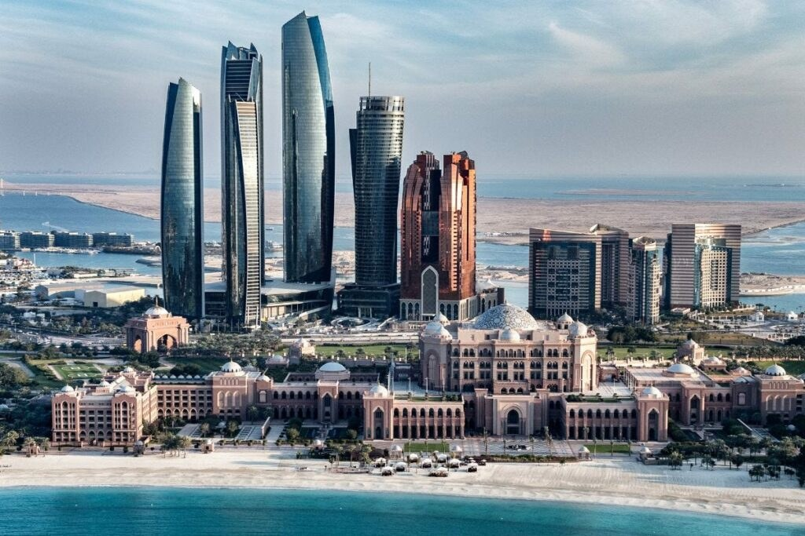
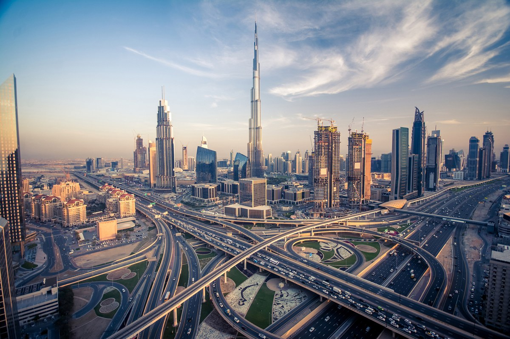
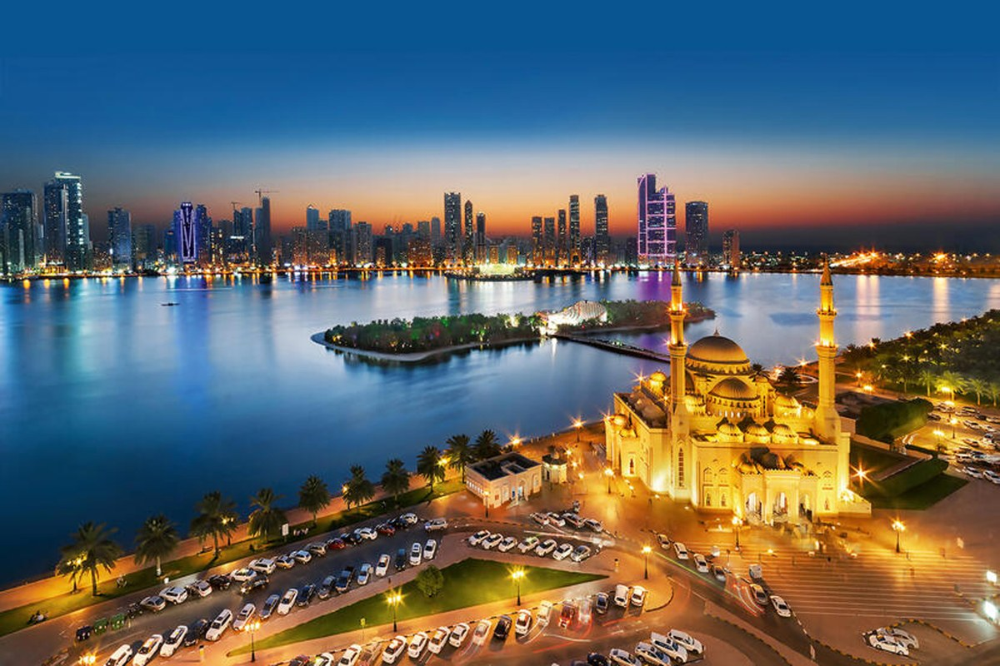
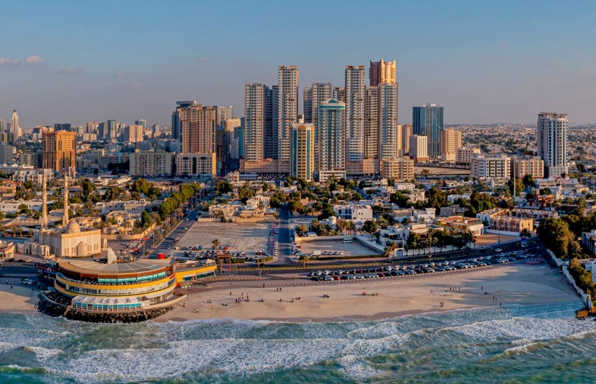
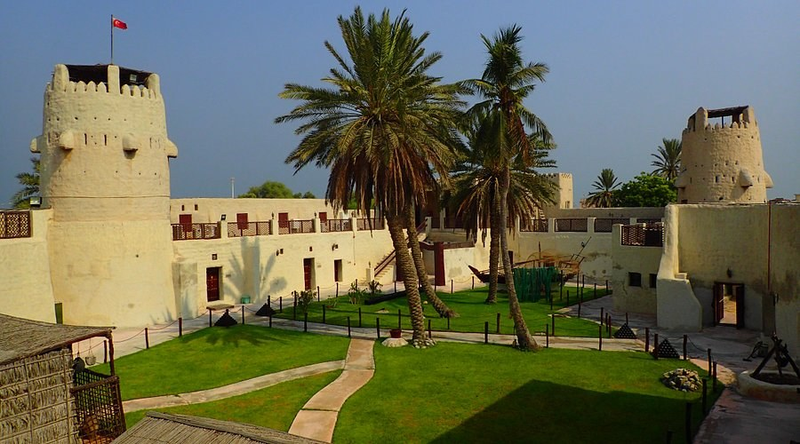
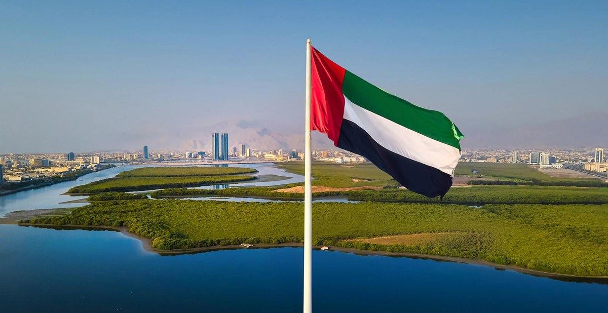
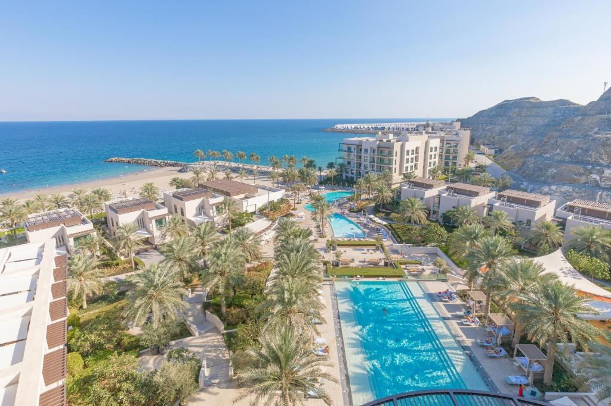

Capital
Abu Dhabi
The capital and largest emirate, mixing culture, nature and grand architecture.
One federation, seven distinct personalities.
Search or filter to find your favourite.

The capital and largest emirate, mixing culture, nature and grand architecture.

The global city of records, shopping and futuristic skylines.

The cultural heart with dozens of museums and a strong arts scene.

A relaxed coastal emirate known for its fort and traditional dhow building.

Lagoons, mangroves and slow-paced seaside life.

Home to Jebel Jais, the UAE’s highest peak area, and long beaches.

The only emirate fully on the Gulf of Oman, with mountains meeting the sea.